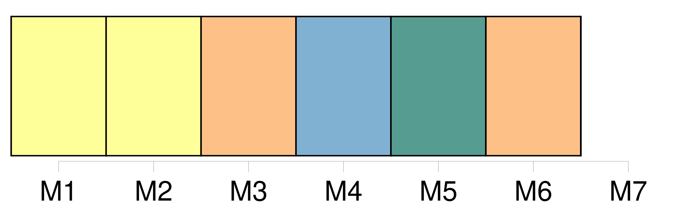
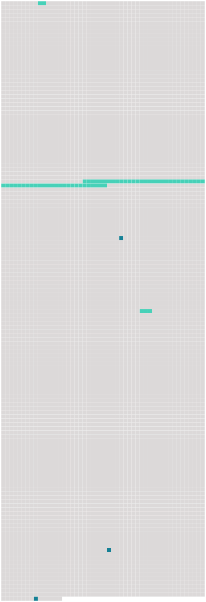

Longueur nb maillons : 6 mentions |
 |
Chaque piéton marchait avec son falot après l'heure [du couvre-feu] [119 phrases] [Le carreau de briques rougeâtres bien lavées, les boiseries brunes soigneusement dégagées de poussière, la glace dont le cadre avait été doré jadis, les meubles massifs brodés au petit point par quelque aïeule de la famille, et deux ou trois tableaux de dévotion légués par l'oncle, curé de la ville] , tout était précisément resté à la même place et dans le même état de vétusté robuste depuis dix ans, dix ans pendant lesquels l'étrangère avait vécu des siècles!! [27 phrases] Ce sont des souvenirs, des images [qui] se logent dans leur esprit, et qui semblent passer devant leurs yeux. [56 phrases] Tu m'aurais accusée de faiblesse, quand, au contraire, il me fallait tant de force pour renoncer à t'écrire, à te suivre, dans [ce monde inconnu] où malgré moi, mon cœur a été si souvent te chercher!! [110 phrases] Cependant le bruit de l'aventure qui avait amené à Saint-Front, route de Paris, une [dame] en chaise de poste qui croyait aller à Villiers, route de Lyon, s'était répandue dans la petite ville et y donnait lieu, depuis quelques heures, à d'étranges commentaires. [24 phrases] — À votre place, [je] ne m'en gênerais pas!! |
 |
Il est possible de télécharger la ressource sur la page Ortolang |
Si vous avez des questions ou vous voyez des erreurs, merci d'envoyer un mail à silvia.federzoni89@gmail.com |